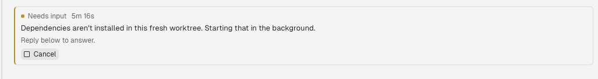

Roster · thread panel
The needs-input card
Five things keeping this card from reading like Linear, and three ways to rebuild it. Every mockup below is live HTML drawn on Roster's own tokens, so the colours are the real ones — only the typeface differs.
What ships today
thread-panel.tsx:250–292

Five observations
Ordered by how much each one costs the reader.
The card repeats the message directly above it
When a permission request arrives, askForInput does
two things with the captured question: it posts it into the thread
as a real agent message, and it writes it to
lastProgress, which the card then renders. So the
same sentence appears twice, a few pixels apart, in two different
type styles.
Linear never restates content to signal state. A card that only exists to say this needs you should carry the state and the action, and let the question stay where the reader already read it.
supervisor.ts:499–513 · thread-panel.tsx:273
When there is no question, it shows a progress line anyway
That is exactly what the screenshot caught.
"Dependencies aren't installed in this fresh worktree.
Starting that in the background." is a progress line, not a
question — the fallback is
question ?? session.lastProgress. Under a heading
that says Needs input, above a line that says
Reply below to answer, it reads as a question the
reader cannot find the answer to.
If no question was captured, say so plainly: "The agent is waiting on you — no prompt captured." A stale progress line dressed as a prompt is worse than an empty card.
supervisor.ts:503 · thread-panel.tsx:274
The state is said three times, and the loudest one is a Slack idiom
An amber dot, the words "Needs input", and a 2px amber left rail all carry one fact. The rail is the odd one out: a coloured left edge is the Slack/Notion callout, and Linear does not use it anywhere. Linear states status with a small coloured glyph beside neutral text, and reserves surface colour for the one thing on screen that wants you.
Drop the rail, keep the dot. If you want more presence than a 6px dot, tint the whole surface a few percent rather than striping one edge.
thread-panel.tsx:254
The timer counts the run, not the wait
elapsedLabel(startedAt, now) measures from the moment
the session started. Sitting next to the words "Needs input",
5m 16s reads as blocked on you for five minutes — but it
means this session has existed for five minutes, and it
keeps climbing across states.
In a card whose whole job is to make someone feel late, the number
should be time-since-needs_input. That needs a
timestamp written when the status flips.
thread-panel.tsx:263 · thread_sessions has no state-change stamp
The only button is the destructive one
The card asks for an answer and then offers no way to give one — just a sentence pointing at a composer somewhere below the fold, and a Cancel button that kills the run. The most prominent affordance in an input-gathering UI should not be the one that discards the work.
The design doc already has the fix queued as step 3:
roster ask-human, clickable answers. It is the
difference between a status card and a useful one. Until it lands,
the card should at least focus the composer on click.
thread-cancel.tsx:38–49 · 2026-09-22-session-states design, "Delivery order"
Direction A — quiet it
Ten minutes. No new data, no new endpoints.
pnpm install to run in this worktree?
Direction B — attach it to the composer
The structural change. This is the part that actually reads like Linear.
pnpm install?
Direction C — make it answerable
B's container, plus the content that makes the card worth having.
pnpm install?
needs_input comes from a
PermissionRequest, so the harness already knows the
options — they just aren't carried through. Render them and the
sentence "Reply below to answer" deletes itself: an instruction that
only exists because the affordance is missing. Single-key shortcuts
are the Linear habit worth stealing; the composer stays for answers
that aren't one of the three.
Can it actually be answered?
Yes — and the half you would expect to be hard already ships. The gap is not sending the answer. It is knowing what the options are.
The send path is already in production
steer() special-cases exactly this: an idle session
gets restarted, but a needs_input one is still
listening, so it calls interrupt() →
sendToAgent({ text, submit: true }), which types
straight into the prompt the agent is blocked on. That is what
already happens when you type a reply in the composer.
So an Allow button that posts a fixed string
through the existing threads.steer mutation is a thin
wrapper over a proven path. No new transport, no new Superset
procedure, no keystroke simulation.
supervisor.ts:1288–1302 · agents.ts:147–166
The receive path carries nothing
AgentLifecycleEvent is
{ eventType, occurredAt } and nothing else. Superset
tells Roster that permission was requested — never what
for, and never what the choices are.
With no payload, askForInput falls back to
captureReply → readTranscript →
agentReply, which returns everything after the last
Assistant: marker in the transcript. It has no
concept of a permission prompt. There is no question extraction
anywhere in the codebase — which is the whole of observation 02.
agents.ts:399–404 · thread-progress.ts:65–82
Three ways to get the options
| Route | Verdict |
|---|---|
| Parse the screen |
readTranscript returns
source: "screen" when the harness transcript is
unavailable, and Claude Code's permission dialog does render
its numbered options into it. You could regex them out and
send back the digit. Don't. The design doc
already rejected this and the rejection is right:
stripAnsi flattens a box-drawn dialog, option
order isn't stable, and the failure mode is silently approving
the wrong command.
|
roster ask-human |
The agent asks explicitly —
roster ask-human "Install deps?" --option Allow --option
Deny. The options are structured because the agent
typed them; nothing is parsed, nothing can mis-fire. It
mirrors roster ask, so the machinery exists:
delegations already parks a thread on an answer
and settleDelegationFor hands one back. Buildable
today, entirely inside Roster.
Limit: it only covers questions the agent
chose to ask. Claude Code's own tool-permission dialogs — the
majority of needs_input — never route through it.
|
| Ask Superset for the payload |
The real fix for the common case: the lifecycle event grows a
permission field (tool, command, option list) and
gains a respond procedure. That is a Superset-side change, not
a Roster one — but it is the only route that makes an
unmodified Claude Code permission dialog clickable
and safe.
|
What I'd do: build roster ask-human now,
and file the payload request with Superset in parallel. The card
renders buttons whenever options exist and falls back to the composer
when they don't — which means the same UI serves both routes, and
route three lights it up for every permission dialog the day it
lands.
What I'd ship
B for the shape, C for the contents. A is what you merge today so the card stops shouting; it doesn't change what the card is for.
-
Delete
border-l-warning border-l-2and collapse the header row. One border, actions on the right. Half an hour. -
Stop echoing the question. The card carries state, elapsed and
actions; the question lives in the transcript where
persistAgentMessagealready put it. Falls out of the same edit. - Move the card out of the virtualised list and pin it above the composer as a full-bleed strip. This is the real work — it changes who owns the element — and it is what makes the surface feel like Linear rather than like a callout.
-
Render options as buttons wherever options exist — starting with
roster ask-human, because the send path is already live and only the options are missing. See Can it actually be answered? above for why the rest waits on Superset.
Two things that are wrong regardless of the redesign
| Where | What happens |
|---|---|
| thread-panel.tsx:253–254 |
border-l-2 overrides a 1px border,
so the card's content jumps one pixel to the right the moment
the status becomes needs_input, and back when it
resolves. Give the rail its 2px in every state and only change
its colour — or drop it, per observation 03.
|
| thread-panel.tsx:263 |
The elapsed label measures from startedAt, so the
time shown beside "Needs input" is the age of the session, not
the length of the wait. Needs a timestamp stamped when the
status changes.
|